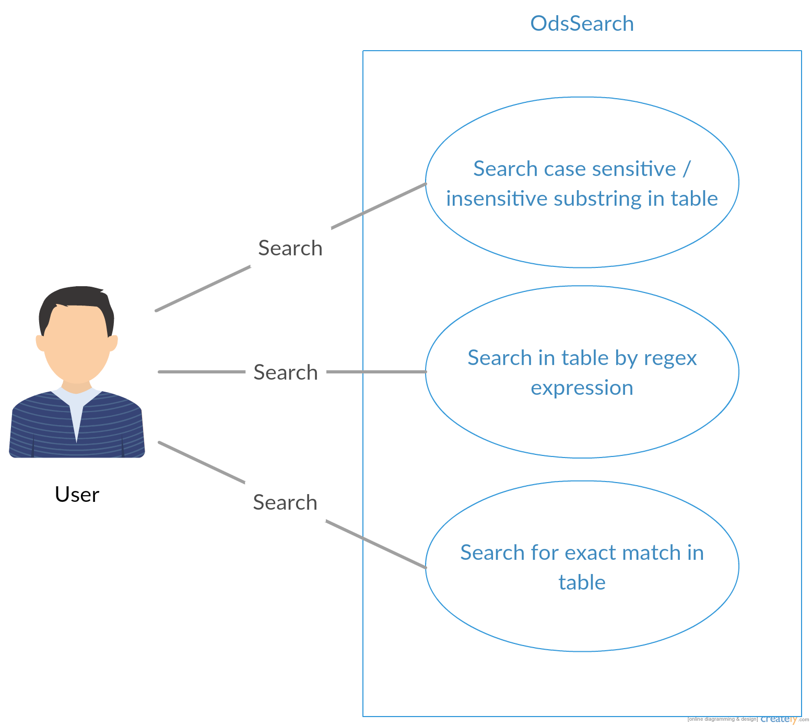
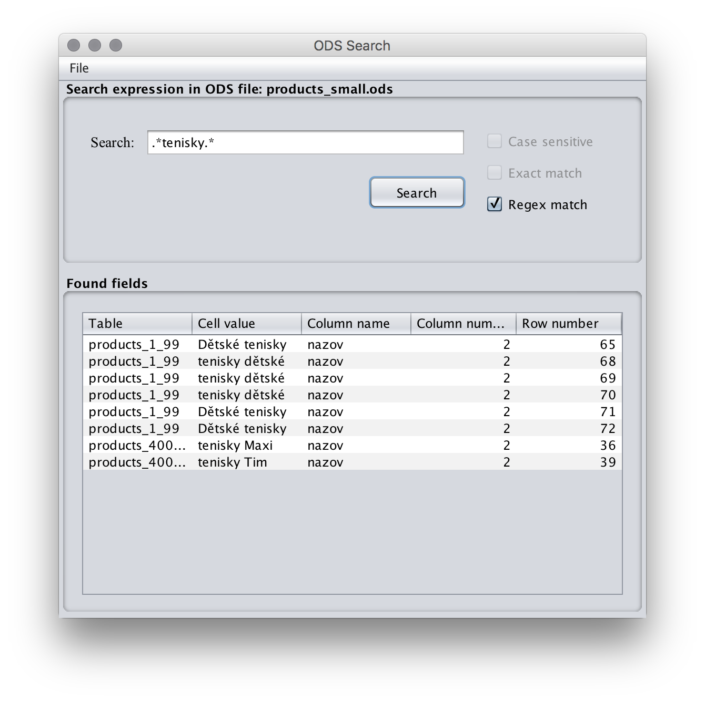

Popis
Ods search je jednoduchá java aplikácia na prehľadávanie Open Document Spreadsheet súborov.
Zadanie projektu
Studenti navrhnou a implementují desktopovou aplikaci v jazyce Java, která umožní prohledávat souborovou kartotéku v souboru ve formátu Open Document Spreadsheet. Soubor může obsahovat více tabulek, které jsou pojmenovány, a které obsahují strukturovaná data, vždy jeden záznam na jednom řádku v tabulce. 1. řádek dané tabulky obsahuje popis jednotlivých atributů, podle kterých lze vyhledávat. Ukázková data dodá zadavatel.
Prípady užitia
V rámci aplikácie je možné vyhľadávať požadované výrazy podľa zvolených parametrov.
- Case Sensitive - záleží na veľkosti znakov
- Exact Match - umožňuje vyhľadávať podreťazce
- Regex match - vyhľadávanie pod regulérneho výrazu 
Štruktúra
- Projekt je rozdelený na dve časti. Trieda OdsSearch poskytuje backendové rozhranie na prehľadávanie súborov. Využíva knižnicu Apache ODF Toolkit [https://incubator.apache.org/odftoolkit/index.html], ktorú sme zvolili hlavne kvôli jej jednoduchosti.
- Grafické rozhranie aplikácie je vytvorené pomocou štandardnej knižnice Swing. Rozhranie umožňuje vyhľadávanie exaktných, čiastočných, alebo regulárnych výrazov.
- Celková štruktúra projektu a všetky závislosti sú spravované pomocou nástroja na správu závislostí Maven.
- Na správu verzovania bol využitý github [https://github.com/], na ktorý bola napojená platforma na postupnú integráciu Travis CI. [https://travis-ci.org/]
- Pre jednoduché využitie backendu je k dispozícii Javadoc dokumentácia [javadoc.html]
Vzhľad aplikácie

Autori
Vedúci projektu:
Mgr. Luděk Bártek, Ph.D., učo 2154
Tím:
- Marek Urban (@arrynn), učo 422252 - backend
- Marek Abaffy (@abaffym), učo 422572 - backend
- Ladislav Otoupal (@otoupal93), učo 422520 - GUI
- Tomáš Ševců (@tsev26), učo 422519 - GUI